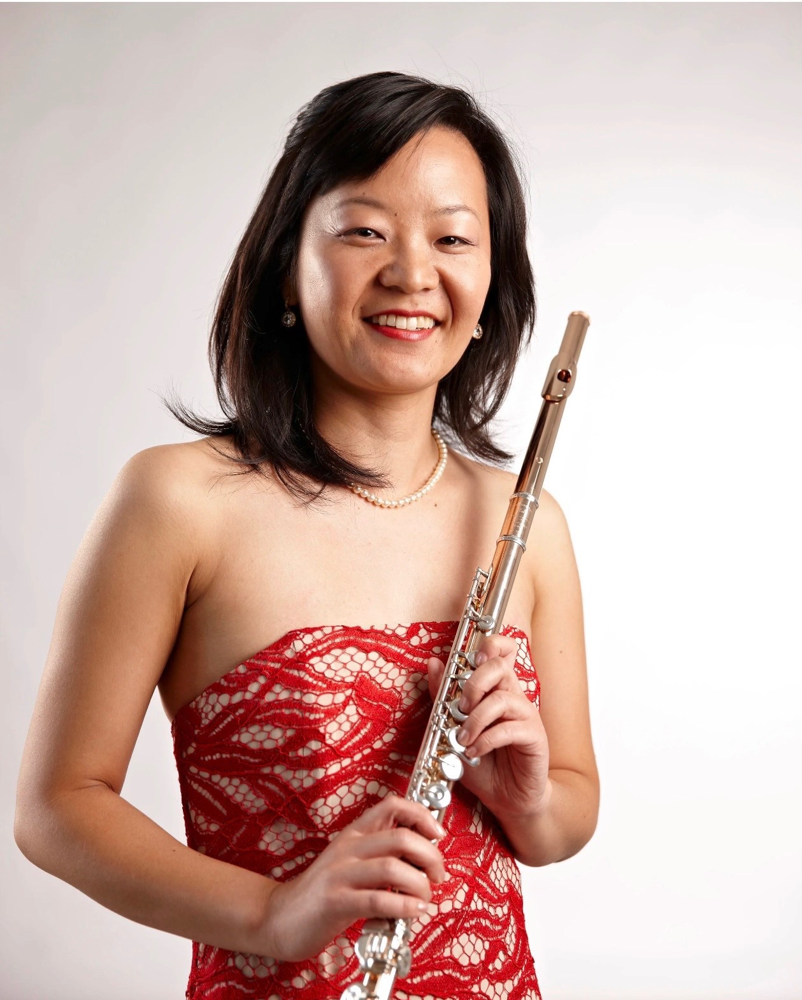

Upcoming Performance
Ai Goldsmith at NFA 2026
Ai Goldsmith will perform “Red, White & Blue and Starr: Celebrating American Creativity” during the National Flute Association’s 54th Annual Convention, held August 6-9, 2026, at the Oregon Convention Center.
- Date
- Thursday, August 6, 2026
- Time
- 2:30-3:30 p.m.
- Location
- B110-112, Oregon Convention Center
- Convention theme
- Origins: Celebrating Trailblazing & Discovery
The program features Maurice Ravel’s Sonatine, arranged by Robert Stallman; the world premiere of Daniel Dorff’s Wind; and Concert Fantasy on The Stars and Stripes Forever by Mark Starr (Isabelle’s husband).
Ai performs with pianist Miles Graber and is joined by Darren Cook, Zart Dombourian-Eby, Christine Erlander-Beard, Jessica Dunnavant, Alaina Goff, Helen Kao, Amy Likar, Alexa Still, Sabrina Walker, Owen Williams, and Haylie Wu, piccolo.